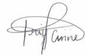

Dear Delegates,
It gives me great pleasure to welcome you all to the very first regional Model United Nations conference hosted by the Cambridge High School. This year’s conference will bring together different schools from across the UAEand around 150 participants. With our humble beginnings in 2008 with only 12 students, this conference, to us, marks a significant milestone in CAMUN history. We hope to make this event a memorable experience for everyone. However, the success of the conference depends greatly on your contribution and support.
Our goal for this session is to provide you with the best possible environment to debate in and come to a consensus on some of the most heated topics of the world today. The theme chosen for this conference is very relevant- ‘Change: A Catalyst for Progress’. By the end of the conference, we hope to demonstrate to everyone that the youth of today is ready for change and is the key in advancing our world to a more sustainable, equitable and peaceful future.
Even after having been an active part of MUN for four years now, it never ceases to amaze me how much more you learn with every conference you attend. It is the same with every committee you engage in, every country you represent, every crisis you encounter and every resolution you pass [or at least try and pass!].
On that note, I urge you to make the most of your experience at CAMUN 2012. Push your limits and throw yourself into the core of the conference. As Andre Gide, French writer, humanist and moralist, once said, “Man cannot discover new oceans unless he has the courage to lose sight of the shore.”
I wish you all the best.
Sincerely,

Priya Anne George
Secretary-General
Cambridge Model United Nations 2012
|